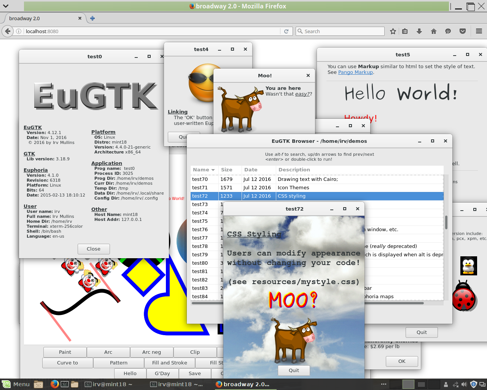
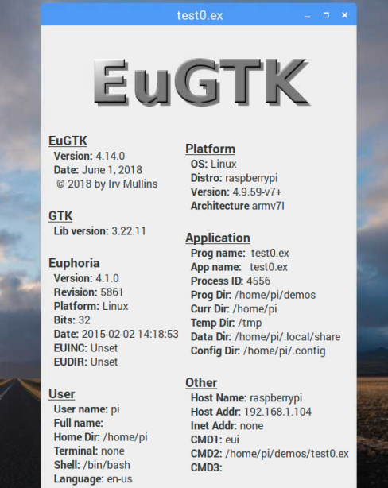

EuGTK is native for Linux
Most modern Linux distros come with GTK3 already installed. If not, you can usually
install the GTK3 libraries easily with your package manager (apt-get or similar).
No special setup or configuration steps are involved.
EuGTK is also reported to work with OS X™. First, install MacPorts, and
then the GTK3 library with this command:
sudo port install gtk3
That should eventually install the library to /opt/local/lib/libgtk-3.dylib.
I cannot test this, since I have no computer running OSX, but Pete Eberlein's
cross-platform Euphoria editor WEE runs on OS X using EuGTK for the user interface.
That's a pretty good test.
EuGTK also now works well with Windows™, but only for 64-bit systems. 32-bit Windows libraries are no longer being updated.
Raspberry Pi 3 - the Raspbian OS comes with GTK3 and EuGTK programs run even on such limited hardware. Binding your programs makes them run quickly, startup is slow unless bound, shrouded, or compiled.
EuGTK programs can be run on any platform.
You can even run EuGTK programs on a remote client (anything that has an HTML5 web
browser, including tablets, phones, etc.), by using broadway on the server.
Clients do not need EuGTK, Euphoria, or GTK to be installed.
The Broadway server can be downloaded using apt-get, or your package manager, and it also comes stock with the latest Mint 18, and perhaps some other distros as well.
This is still experimental, but most of the demos in this package work ok with a web browser. (Even the complex BEAR). Many work when browsing with a tablet or phone. Probably my demo programs need to listen for 'motion' events (swipes, etc) to get these working fully, or perhaps the browsers on my tablet aren't up-to-date with HTML5?
The on_broadway.ex utility can be used to launch a Euphoria program and open your default web browser to localhost:8080. You can also specify a different port on the command line.
Multiple users are not currently supported, but you can run several instances of the broadwayd server, assigning a different port for each.
Several EuGTK demos running in a Firefox™ window
EuGTK running on a Raspberry PI™